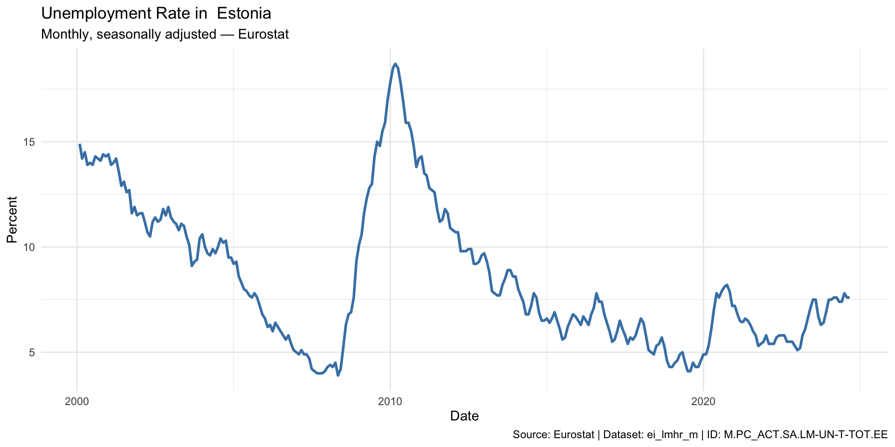
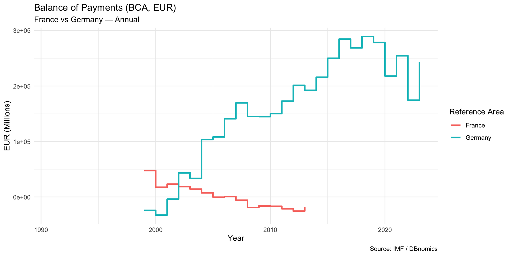
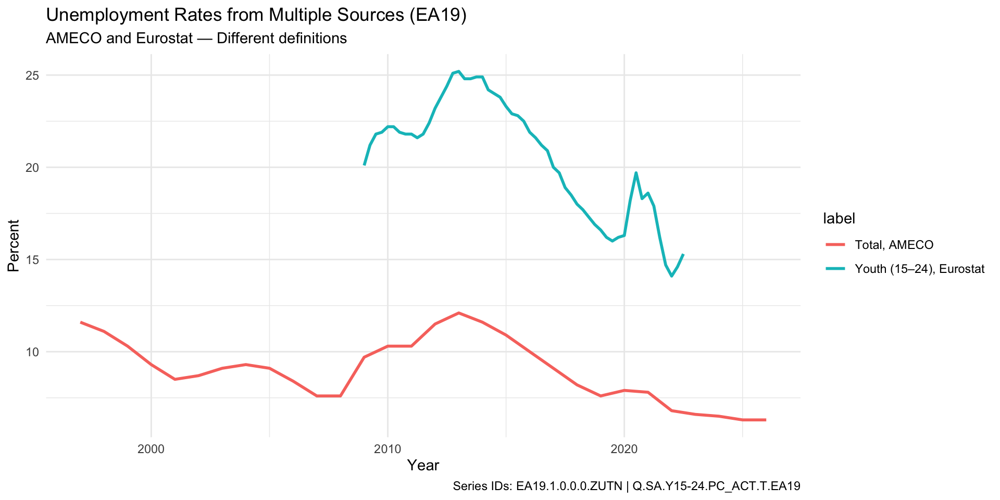
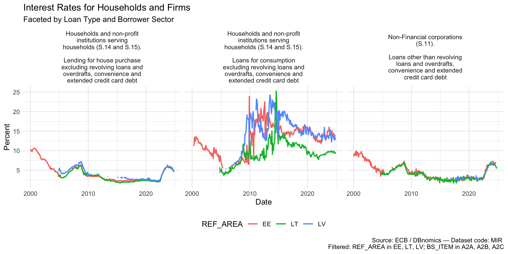

Eesti Pank
2025-04-17
rdbnomics)tidyverse)ggplot2, plotly)gt)quarto)Rows: 296
Columns: 22
$ `@frequency` <chr> "monthly", "monthly", "monthly", "mo…
$ dataset_code <chr> "ei_lmhr_m", "ei_lmhr_m", "ei_lmhr_m…
$ dataset_name <chr> "Unemployment rate (%) - monthly dat…
$ freq <chr> "M", "M", "M", "M", "M", "M", "M", "…
$ geo <chr> "EE", "EE", "EE", "EE", "EE", "EE", …
$ `Geopolitical entity (reporting)` <chr> "Estonia", "Estonia", "Estonia", "Es…
$ indexed_at <dttm> 2024-10-31 15:26:51, 2024-10-31 15:…
$ indic <chr> "LM-UN-T-TOT", "LM-UN-T-TOT", "LM-UN…
$ Indicator <chr> "Unemployment according to ILO defin…
$ observations_attributes <chr> "OBS_FLAG,", "OBS_FLAG,", "OBS_FLAG,…
$ original_period <chr> "2000-02", "2000-03", "2000-04", "20…
$ original_value <chr> "14.9", "14.2", "14.5", "13.9", "14"…
$ period <date> 2000-02-01, 2000-03-01, 2000-04-01,…
$ provider_code <chr> "Eurostat", "Eurostat", "Eurostat", …
$ s_adj <chr> "SA", "SA", "SA", "SA", "SA", "SA", …
$ `Seasonal adjustment` <chr> "Seasonally adjusted data, not calen…
$ series_code <chr> "M.PC_ACT.SA.LM-UN-T-TOT.EE", "M.PC_…
$ series_name <chr> "Monthly – Percentage of population …
$ `Time frequency` <chr> "Monthly", "Monthly", "Monthly", "Mo…
$ unit <chr> "PC_ACT", "PC_ACT", "PC_ACT", "PC_AC…
$ `Unit of measure` <chr> "Percentage of population in the lab…
$ value <dbl> 14.9, 14.2, 14.5, 13.9, 14.0, 13.9, … [1] "@frequency" "dataset_code"
[3] "dataset_name" "freq"
[5] "geo" "Geopolitical entity (reporting)"
[7] "indexed_at" "indic"
[9] "Indicator" "observations_attributes"
[11] "original_period" "original_value"
[13] "period" "provider_code"
[15] "s_adj" "Seasonal adjustment"
[17] "series_code" "series_name"
[19] "Time frequency" "unit"
[21] "Unit of measure" "value" [1] "ei_lmhr_m"[1] "Eurostat"[1] "Estonia"[1] "M.PC_ACT.SA.LM-UN-T-TOT.EE"# Plot the data
p1 <- ggplot(unemp, aes(x = period, y = value)) +
geom_line(color = "steelblue", linewidth = 1) +
labs(
title = paste("Unemployment Rate in ", country_name),
subtitle = paste("Monthly, seasonally adjusted —", provider_code),
x = "Date", y = "Percent",
caption = paste("Source:", provider_code, "| Dataset:", source_name, "| ID:", series_id)
) +
theme_minimal()
p1
$Eurostat
code
<char>
1: aact_ali01
2: aact_ali02
3: aact_eaa01
4: aact_eaa02
5: aact_eaa03
---
8289: yth_empl_120
8290: yth_empl_130
8291: yth_empl_130
8292: yth_empl_140
8293: yth_empl_140
name
<char>
1: Agricultural labour input statistics: absolute figures (1 000 annual work units)
2: Agricultural labour input statistics: indices
3: Economic accounts for agriculture - values at current prices
4: Economic accounts for agriculture - values at n-1 prices
5: Economic accounts for agriculture - values at constant prices (2015 = 100)
---
8289: Youth long-term unemployment rate (12 months or longer) by sex and age
8290: Youth long-term unemployment rate (12 months or longer) by sex, age and NUTS 2 regions
8291: Youth long-term unemployment rate (12 months or longer) by sex, age and NUTS 2 region
8292: Youth unemployment ratio by sex, age and NUTS 2 regions
8293: Youth unemployment ratio by sex, age and NUTS 2 region$Eurostat
$Eurostat$ei_lmhr_m
$Eurostat$ei_lmhr_m$freq
freq Time frequency
<char> <char>
1: M Monthly
$Eurostat$ei_lmhr_m$geo
geo Geopolitical entity (reporting)
<char> <char>
1: AT Austria
2: BA Bosnia and Herzegovina
3: BE Belgium
4: BG Bulgaria
5: CH Switzerland
6: CY Cyprus
7: CZ Czechia
8: DE Germany
9: DK Denmark
10: EA20 Euro area – 20 countries (from 2023)
11: EE Estonia
12: EL Greece
13: ES Spain
14: EU27_2020 European Union - 27 countries (from 2020)
15: FI Finland
16: FR France
17: HR Croatia
18: HU Hungary
19: IE Ireland
20: IS Iceland
21: IT Italy
22: JP Japan
23: LT Lithuania
24: LU Luxembourg
25: LV Latvia
26: MT Malta
27: NL Netherlands
28: NO Norway
29: PL Poland
30: PT Portugal
31: RO Romania
32: SE Sweden
33: SI Slovenia
34: SK Slovakia
35: TR Türkiye
36: UK United Kingdom
37: US United States
geo Geopolitical entity (reporting)
$Eurostat$ei_lmhr_m$indic
indic
<char>
1: LM-UN-F-GT25
2: LM-UN-F-LE25
3: LM-UN-F-TOT
4: LM-UN-M-GT25
5: LM-UN-M-LE25
6: LM-UN-M-TOT
7: LM-UN-T-GT25
8: LM-UN-T-LE25
9: LM-UN-T-TOT
Indicator
<char>
1: Unemployment according to ILO definition - over 25 years - females
2: Unemployment according to ILO definition - under 25 years - females
3: Unemployment according to ILO definition - females
4: Unemployment according to ILO definition - over 25 years - males
5: Unemployment according to ILO definition - under 25 years - males
6: Unemployment according to ILO definition - males
7: Unemployment according to ILO definition - over 25 years - total
8: Unemployment according to ILO definition - under 25 years - total
9: Unemployment according to ILO definition - total
$Eurostat$ei_lmhr_m$s_adj
s_adj
<char>
1: NSA
2: SA
Seasonal adjustment
<char>
1: Unadjusted data (i.e. neither seasonally adjusted nor calendar adjusted data)
2: Seasonally adjusted data, not calendar adjusted data
$Eurostat$ei_lmhr_m$unit
unit Unit of measure
<char> <char>
1: PC_ACT Percentage of population in the labour force$Eurostat
$Eurostat$ei_lmhr_m
series_code
<char>
1: M.PC_ACT.NSA.LM-UN-F-GT25.UK
2: M.PC_ACT.NSA.LM-UN-F-LE25.UK
3: M.PC_ACT.NSA.LM-UN-F-TOT.UK
4: M.PC_ACT.NSA.LM-UN-M-GT25.UK
5: M.PC_ACT.NSA.LM-UN-M-LE25.UK
6: M.PC_ACT.NSA.LM-UN-M-TOT.UK
7: M.PC_ACT.NSA.LM-UN-T-GT25.UK
8: M.PC_ACT.NSA.LM-UN-T-LE25.UK
9: M.PC_ACT.NSA.LM-UN-T-TOT.UK
10: M.PC_ACT.SA.LM-UN-F-GT25.UK
11: M.PC_ACT.SA.LM-UN-F-LE25.UK
12: M.PC_ACT.SA.LM-UN-F-TOT.UK
13: M.PC_ACT.SA.LM-UN-M-GT25.UK
14: M.PC_ACT.SA.LM-UN-M-LE25.UK
15: M.PC_ACT.SA.LM-UN-M-TOT.UK
16: M.PC_ACT.SA.LM-UN-T-GT25.UK
17: M.PC_ACT.SA.LM-UN-T-LE25.UK
18: M.PC_ACT.SA.LM-UN-T-TOT.UK
series_name
<char>
1: Monthly – Percentage of population in the labour force – Unadjusted data (i.e. neither seasonally adjusted nor calendar adjusted data) – Unemployment according to ILO definition - over 25 years - females – United Kingdom
2: Monthly – Percentage of population in the labour force – Unadjusted data (i.e. neither seasonally adjusted nor calendar adjusted data) – Unemployment according to ILO definition - under 25 years - females – United Kingdom
3: Monthly – Percentage of population in the labour force – Unadjusted data (i.e. neither seasonally adjusted nor calendar adjusted data) – Unemployment according to ILO definition - females – United Kingdom
4: Monthly – Percentage of population in the labour force – Unadjusted data (i.e. neither seasonally adjusted nor calendar adjusted data) – Unemployment according to ILO definition - over 25 years - males – United Kingdom
5: Monthly – Percentage of population in the labour force – Unadjusted data (i.e. neither seasonally adjusted nor calendar adjusted data) – Unemployment according to ILO definition - under 25 years - males – United Kingdom
6: Monthly – Percentage of population in the labour force – Unadjusted data (i.e. neither seasonally adjusted nor calendar adjusted data) – Unemployment according to ILO definition - males – United Kingdom
7: Monthly – Percentage of population in the labour force – Unadjusted data (i.e. neither seasonally adjusted nor calendar adjusted data) – Unemployment according to ILO definition - over 25 years - total – United Kingdom
8: Monthly – Percentage of population in the labour force – Unadjusted data (i.e. neither seasonally adjusted nor calendar adjusted data) – Unemployment according to ILO definition - under 25 years - total – United Kingdom
9: Monthly – Percentage of population in the labour force – Unadjusted data (i.e. neither seasonally adjusted nor calendar adjusted data) – Unemployment according to ILO definition - total – United Kingdom
10: Monthly – Percentage of population in the labour force – Seasonally adjusted data, not calendar adjusted data – Unemployment according to ILO definition - over 25 years - females – United Kingdom
11: Monthly – Percentage of population in the labour force – Seasonally adjusted data, not calendar adjusted data – Unemployment according to ILO definition - under 25 years - females – United Kingdom
12: Monthly – Percentage of population in the labour force – Seasonally adjusted data, not calendar adjusted data – Unemployment according to ILO definition - females – United Kingdom
13: Monthly – Percentage of population in the labour force – Seasonally adjusted data, not calendar adjusted data – Unemployment according to ILO definition - over 25 years - males – United Kingdom
14: Monthly – Percentage of population in the labour force – Seasonally adjusted data, not calendar adjusted data – Unemployment according to ILO definition - under 25 years - males – United Kingdom
15: Monthly – Percentage of population in the labour force – Seasonally adjusted data, not calendar adjusted data – Unemployment according to ILO definition - males – United Kingdom
16: Monthly – Percentage of population in the labour force – Seasonally adjusted data, not calendar adjusted data – Unemployment according to ILO definition - over 25 years - total – United Kingdom
17: Monthly – Percentage of population in the labour force – Seasonally adjusted data, not calendar adjusted data – Unemployment according to ILO definition - under 25 years - total – United Kingdom
18: Monthly – Percentage of population in the labour force – Seasonally adjusted data, not calendar adjusted data – Unemployment according to ILO definition - total – United Kingdom# Line plot with color by country
p2 <- ggplot(bop, aes(x = period, y = value, color = `Reference Area`)) +
geom_step(linewidth = 1) +
labs(
title = "Balance of Payments (BCA, EUR)",
subtitle = "France vs Germany — Annual",
x = "Year",
y = "EUR (Millions)",
caption = "Source: IMF / DBnomics"
) +
theme_minimal()
p2
[1] 122 27[1] "AMECO" "Eurostat"[1] "ZUTN" "une_rt_q"[1] "EA19.1.0.0.0.ZUTN" "Q.SA.Y15-24.PC_ACT.T.EA19"[1] "annual" "quarterly"[1] NA
[2] "Seasonally adjusted data, not calendar adjusted data"# Summarize coverage and data availability
unemp2_summary <- unemp2 %>%
group_by(series_code) %>%
summarize(
provider = first(provider_code),
dataset = first(dataset_code),
start_all = min(period, na.rm = TRUE),
end_all = max(period, na.rm = TRUE),
start_data = min(period[!is.na(value)]),
end_data = max(period[!is.na(value)]),
n_obs = sum(!is.na(value)),
.groups = "drop"
)unemp2_summary_table <- unemp2_summary |>
gt() %>%
tab_header(
title = "Time Coverage and Non-Missing Observations",
subtitle = "For Each Series from AMECO and Eurostat"
) %>%
cols_label(
series_code = "Series ID",
provider = "Provider",
dataset = "Dataset",
start_all = "Start (all)",
end_all = "End (all)",
start_data = "Start (non-NA)",
end_data = "End (non-NA)",
n_obs = "# Obs"
) %>%
fmt_date(
columns = c(start_all, end_all, start_data, end_data),
date_style = "iso"
) %>%
tab_options(
table.width = pct(100),
column_labels.font.weight = "bold"
)| Time Coverage and Non-Missing Observations | |||||||
|---|---|---|---|---|---|---|---|
| For Each Series from AMECO and Eurostat | |||||||
| Series ID | Provider | Dataset | Start (all) | End (all) | Start (non-NA) | End (non-NA) | # Obs |
| EA19.1.0.0.0.ZUTN | AMECO | ZUTN | 1960-01-01 | 2026-01-01 | 1997-01-01 | 2026-01-01 | 30 |
| Q.SA.Y15-24.PC_ACT.T.EA19 | Eurostat | une_rt_q | 2009-01-01 | 2022-07-01 | 2009-01-01 | 2022-07-01 | 55 |
p3 <- ggplot(unemp2_clean, aes(x = period, y = value, color = label)) +
geom_line(linewidth = 1) +
labs(
title = "Unemployment Rates from Multiple Sources (EA19)",
subtitle = "AMECO and Eurostat — Different definitions",
x = "Year", y = "Percent",
caption = paste("Series IDs:", paste(unique(unemp2_clean$series_code), collapse = " | "))
) +
theme_minimal()
p3
mir_mortgage_ee <- rdb("ECB", "MIR", "M.EE.B.A2C.A.R.A.2250.EUR.N")
unique(mir_mortgage_ee$series_name)[1] "Monthly – Estonia – Deposit-taking corporations except the central bank (S.122) – Lending for house purchase excluding revolving loans and overdrafts, convenience and extended credit card debt – Total – Annualised agreed rate (AAR) / Narrowly defined effective rate (NDER) – Total – Households and non-profit institutions serving households (S.14 and S.15) – Euro – New business""EE" to fetch all countries (REF_AREA)⚠️ This can take a while
# mir_mortgage_ee <- rdb("ECB", "MIR", "M.EE.B.A2C.A.R.A.2250.EUR.N")
mir <- rdb("ECB", "MIR", "M..B..A.R.A..EUR.N")
unique(mir$REF_AREA) [1] "AT" "BE" "CY" "DE" "EE" "ES" "FI" "FR" "GR" "HR" "IE" "IT" "LT" "LU" "LV"
[16] "MT" "NL" "PT" "SI" "SK" "U2" [1] "A2A" "A2AC" "A2B" "A2BC" "A2C" "A2CC" "A2D" "A2Z" "A2Z1" "A2Z3"
[11] "L21" "L22" "L23" "L24" [1] "Non-Financial corporations (S.11)"
[2] "Households and non-profit institutions serving households (S.14 and S.15)"
[3] "Households of which sole proprietors and unincorporated partnerships (SP/UP)"
[4] "Non-Financial corporations and Households (S.11 and S.14 and S.15)" country_list <- paste(sort(unique(mir_filtered$REF_AREA)), collapse = ", ")
item_list <- paste(unique(mir_filtered$BS_ITEM), collapse = ", ")
caption_text <- paste(
"Source: ECB / DBnomics — Dataset code: MIR",
paste0("\nFiltered: REF_AREA in ", country_list, "; BS_ITEM in ", item_list)
)
mir_filtered <- mir_filtered %>%
mutate(facet_label = paste0(`BS counterpart sector`, ".\n\n", `Balance sheet item`))
p4 <- ggplot(mir_filtered, aes(x = period, y = value, color = REF_AREA)) +
geom_line(linewidth = 0.8) +
facet_wrap(~ facet_label, labeller = label_wrap_gen(width = 30), ncol = 3) +
labs(
title = "Interest Rates for Households and Firms",
subtitle = "Faceted by Loan Type and Borrower Sector",
x = "Date", y = "Percent",
caption = caption_text
) +
theme_minimal() +
theme(legend.position = "bottom")
p4